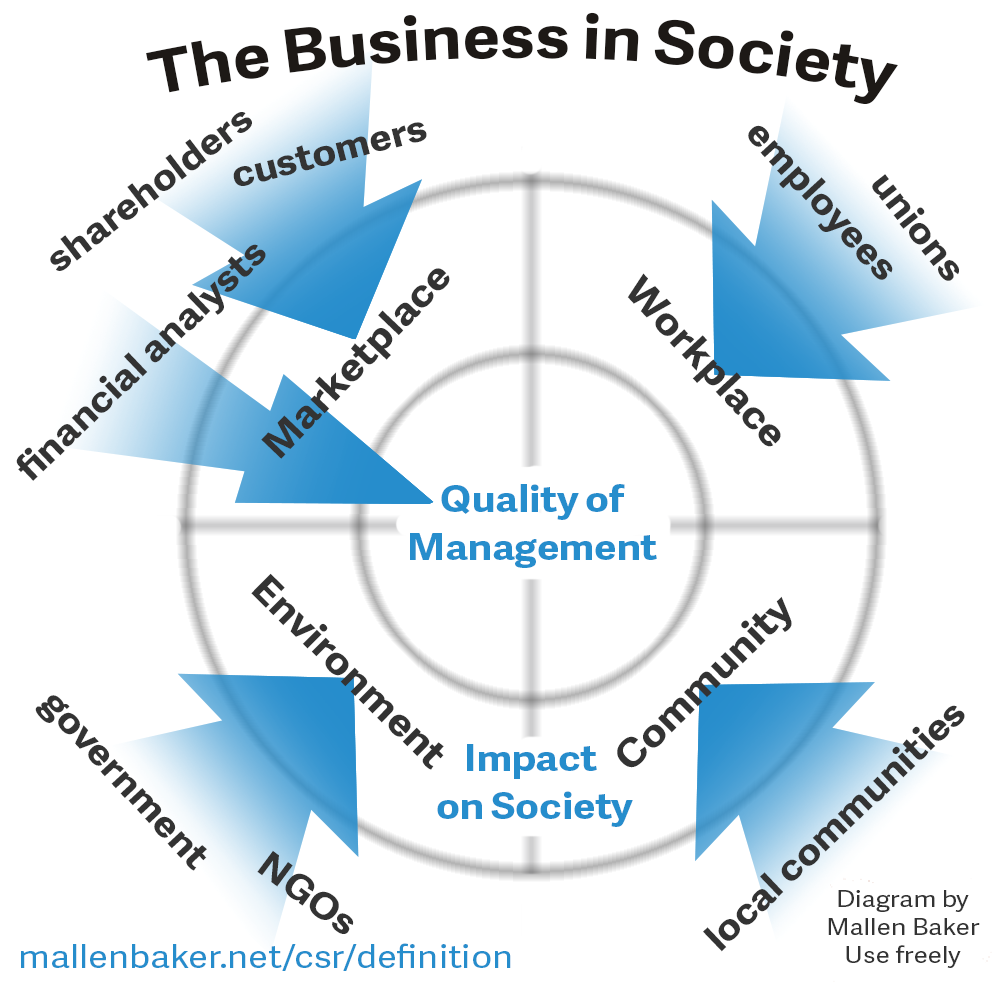

I was after one of the sillier charts to illustrate CSR. It was a tough choice, but this one hit all its KPIs. Originally worked up from the map which guided the bombing of Hamburg, all Troppodillians will join with me in celebrating its use in a civilian capacity.CSR, shared value and its old establishment incarnation, pro bono work, arose from the old sense of noblesse oblige. Actually I wouldn’t have the slightest idea how it arose, but I thought I’d begin this post with a bit of strategisation – you know, where I say that a social institution suited its own time but now needs to be brought into the modern world, that given the state we're in this issue has never been more important etc etc?
In any event, today CSR and similar initiatives arise from various motives.
- The company would like to do something good, either because it wants to of its own accord or because it’s got up the community’s nose in the past.
- The company would like to associate itself with Good Things which it hopes won't hurt, and ideally will help its bottom line. This can happen through:
- Continued licence to operate (it minimises the number of people chaining themselves to its bulldozers or snarking about it on social media);
- Increased sales through improving its image with consumers; and/or
- Improved recruiting power in appealing to employees who want to ‘make a difference’.
In my discussions with big consulting and legal firms, one driver of pro bono work is its capacity to address the angst of the best graduates. Amid all this money making, they want their careers to be about making the world a better place. As the saying goes “All work and no change we can believe in makes Jack a dull boy”. Of course this hankering can only be addressed within reason – we’re not running a charity here. Nevertheless, a managing partner of BCG once told me that this was worth 5% of payroll to them to attract the best graduate talent.
Of course billionaires – even billionaires – can’t on their own do much to address inequality. But, as Anand Giridharadas points out, their do-gooding papers over the structural inequality that has been responsible for their wealth and very few do anything to tackle structural inequality – like tax avoidance for instance.
I think it’s worth exploring how one could broaden the idea of CSR to CSPR or corporate social policy responsibility. A firm signing up to CSPR would undertake not to lobby for or otherwise support public policies to support their own corporate interest unless it was also in the public interest.
Obviously the hard part is how it could be operationalised. Firstly if the idea is to be pursued it’s most likely to be pursued as a result of some kind of activism seeking to push companies toward it. That would come from various movements for ‘ethical’ consumption and investment[1. These approaches may have some value, but if they are not counterproductive they have their limits in making the world a better place.] seeking to broaden their mandates to pursuing CSPR. Perhaps it could also come from such movements seeking to politicise the issue of what firm you work for.
Accordingly, activists trying to get this off the ground would need to have some objectives which can be demanded of the firms or policymakers they target to operationalise the principle. For this area suffers terribly from Gresham's Law. Just as bad money drives out good in currency, bad CSR or CSR that's cynically motivated undermines the incentive for others to pursue it conscientiously. We need to be able to ensure that a firm can’t just say nice things and resume business-as-usual.
As a first cut I’d suggest that such activism include these requirements for a firm to be accepted as CSPR compliant:
- The firm would maintain a publicly accessible log – analogous to the lobbyists registers governments keep – of all policy positions and requests made of government together with an undertaking not to pursue others informally.
- The firm would undertake that any policy position it sought to promote with government would go through some process of ensuring that it was in the public interest.
- Given that opinions would differ regarding this, some independent process would be required for determining this, or perhaps some weaker standard of being unlikely to violate the public interest.
A waystation towards such a position might involve activists making it clear that their intention was to campaign against some firm if they publicly articulated a position that was determined by some process as in 3 above, to be clearly against the public interest. The Disney corporation lobbying for the Mickey Mouse Protection Act would be an example of a violation of CSPR.
I'd also like to see a situation where some firms came out in favour of plugging tax loopholes, and that CSPR would not require them to unilaterally foresake taking advantage of them. This places the onus where I think it is reasonable in a competitive market. I recall the ex South Australian Premier Steele Hall when he was a Federal Senator campaigning against politicians getting a pay rise as a matter of policy but not foresaking it when he lost the vote and the pay rises went through.
Is it realistic to think that this might be an avenue for successful activism? I don’t know. If so it would definitely start out as a niche play. But I can imagine activists raining on the parade of firms trumpeting their CSR and shared value credentials and so making it a bit harder for firms to bask in their glory without some compromise on the CSPR front.
Anyway, for too long CSR and shared value have been suited to the twentieth century where they spent their early years. But this is the age of smartphones and AI taking everyone’s jobs. So just like Henry Ford brought the horse up to date by taking it off the racetrack and running it down the assembly line and putting four wheels on it, we need to update CSR to make it fit for our age. We need to do to CSR what Uber did for the sundial.
What sayest thou O Troppodillians?
totally agreed. I once suggested to a conference of 200 self-professed corporate do-gooders that they came up with a quality label for companies who paid a reasonable amount of taxation. I also suggested they funded think-tanks that would specialise in tax morale and how to get taxes out of platforms (think uber and airbnb) as well the too-big-to-tax companies.
Deathly silence. I believe someone chocked on their vegan G&T and almost dropped their frequent flier badge that had a Nelson Mandela logo.
5% sure, but nothing that would cost them their good name with the other 'ahem' do-gooders.
Still, I do think its the way to go to argue that true do-gooding means supporting the nation state and lining up against the corporate interests that undermine it. There is a shitload of good to be done there and companies might turn out to be rather good at it.
"A firm signing up to CSPR would undertake not to lobby for or otherwise support public policies to support their own corporate interest unless it was also in the public interest."
Sadly, I suspect this clause would rob the idea of most of its power. In my experience, spreading the belief that a preferred policy is in the public interest is the first step that most corporations take internally when commencing lobbying. It's so automatic that it can be hard for many people to even see. They all believe that their preferred action is in the public interest. Their continued employment requires them to do so.
It remains as difficult to get someone to understand something when their salary depends upon their not understanding it.
Yes, agreed.
I have it in mind some standard and independent process, and not one controlled by or even influenced by the corporation. And yes, that's a hard thing to get happening, I agree.
CSR as a phenomen is inseparable from the class of consultants who derive a livelihood from it. Or, to put it another way, CSR wouldn't exist without this class of consultants - it is nurtured by them, promoted by them, and milked by them.
In the late 1990s when a cluster of 'social' responses emerged to neo-liberalism, including social venture philanthropy and impact investment, social entrepreneurship, social innovation and CSR, the interests of this consulting class were entwined with those of several other interests (NGOs, philanthropic foundations, and, in amongst the others, community associations that genuinely sought to address predicaments of disadvantage they were immersed in).
In the twenty years since then, these responses have now been captured, almost exclusively, by the financial and career interests of these practitioners and their aupicing organisations (the community groups have fallen by the wayside). The 'social' has been steadily narrowed to mean little more than the career and financial interests of the managerial class in nominally 'social' organisations. The CSR practitioners have successfully hitched their interests to those of the corporate world in a classic example of what they call a 'win-win': the corporates have been given a 'social' rationale for their gouging of consumers, and the CSR practitioners have got permanent rather than 'gig' work.
Qantas is a marvellous demonstration of the outcome. The 'social' for Qantas now means prosecution of LGBTQ rights, including the active bullying of tennis legend Margaret Court for being outside the 'social' consensus. This works for Qantas staff, while allowing CEO Alan Joyce to wallow in a $6.565m salary, and allows CSR practitioners to join him in salaried work. Both can virtue-signal to their heart's content.
interesting! The capture of "ethical challenges" is extremely common and lucrative to the captors. One might call it the Business of Purity.